[ubuntu入门手册]-5-如何备份和还原系统
引言
这篇文章介绍Linux环境如何备份和还原系统。习惯了使用Windows的朋友可能会在安装和优化好系统后，使用类似Ghost这样的备份软件来对系统盘进行一次备份，以免在以后系统无法启动的时候还原系统。而Ghost对Linux文件系统的支持一直不是很好，本文推荐两种Linux环境备份的方案：其中之一和Ghost十分相似，名叫Clonezilla（中文名：再生龙）；另外一种纯终端方案，使用系统自带的tar归档。
文章目录
0×1.如何使用Clonezilla再生龙备份和还原Ubuntu
首先，去往Clonezilla官方网站下载软件：
Clonezilla中文主站（推荐）
Clonezilla英文主站
选择"稳定发行版"，本文下载的是64位的zip格式（如果物理环境是ubuntu，可以选择下载iso格式然后将其制作成usb启动）。
准备一个u盘，大于300M就可以，将下载下来的zip格式解压缩到u盘里，在windows环境下，以管理员身份运行u盘utils\win32\目录下的makeboot.bat （一定要将解压缩后的文件放在u盘里面在u盘里面执行makeboot.bat，不要在u盘之外的地方运行，切记！），这样就能将u盘制作成Clonezilla引导盘了。（这是我觉得比较不人性化的地方，我物理机是ubuntu系统，根本运行不了bat后缀文件，不得已只有安装个虚拟机，在虚拟机里面安装个windows来完成这一步，想了解虚拟机是如何安装的朋友，可以参考本系列下一篇文章中的内容）
现在可以使用u盘启动了，下面是使用Clonezilla备份和还原的一次完整记录；
实验系统环境：Ubuntu
实验系统分区：20G挂载到/，分区号/dev/sda1；剩下的空间挂载到/home，分区号/dev/sda5
工具：已经安装到u盘的Clonezilla
实验目的：使用Clonezilla将/dev/sda1备份到/dev/sda5中，之后再使用sda5中的备份镜像还原sda1。
备份过程：
U盘启动后，进入Clonezilla启动界面，选择第一个直接回车
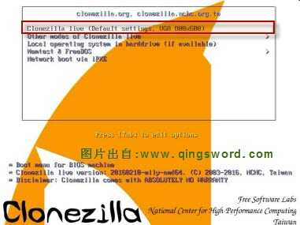 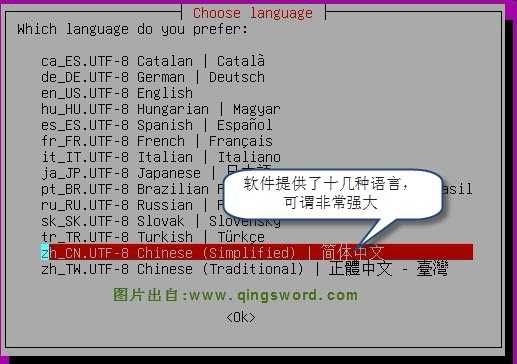 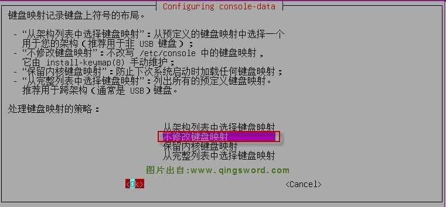 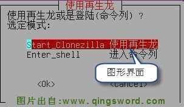 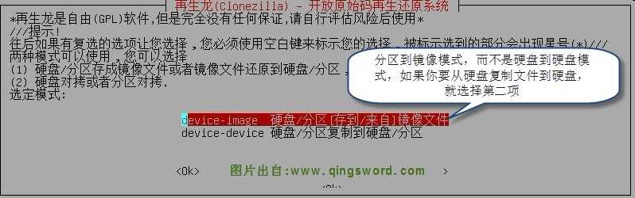 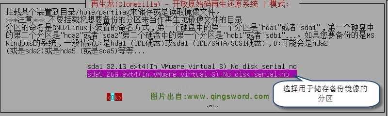
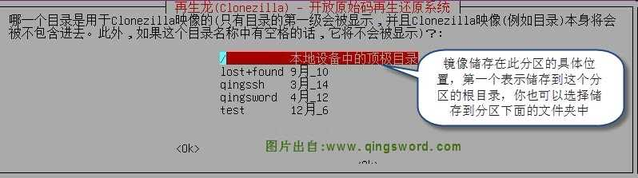
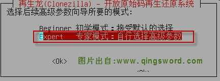
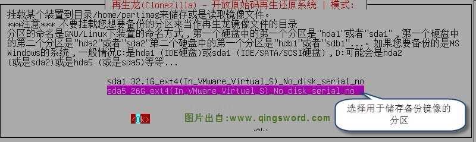
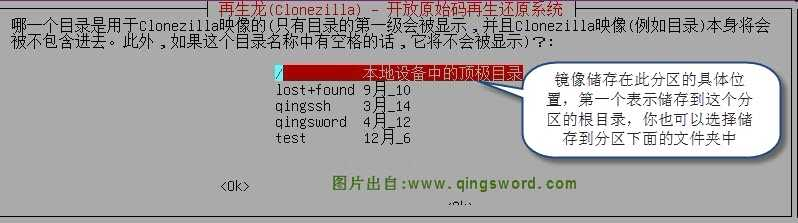
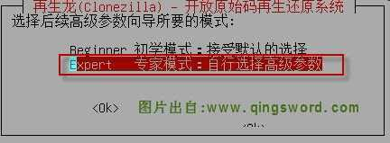
备份和还原的过程中，前9张图都是一样的，只有下面的步骤不同
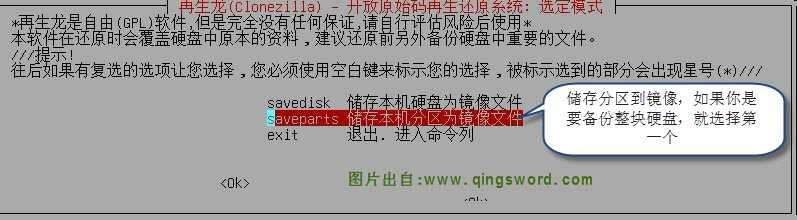 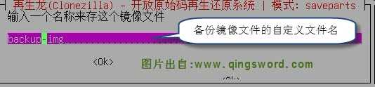 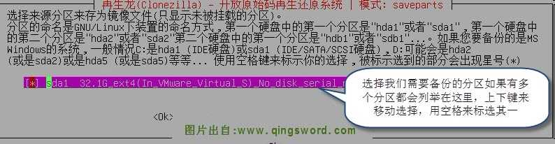在这之后的操作全部默认回车就好，都是中文提示，根据提示操作即可，如果你想对镜像加密，就选择加密，会在稍后提示你输入两遍密码，这个密码很重要，如果遗忘，还原时将不能解压镜像。
根据个人电脑的性能，备份大概需要5~10分钟，至此，已经将/dev/sda1备份到了/dev/sda5分区的根目录下，备份好的镜像实际上是个文件夹，里面保存了还原时所需的重要数据，删除或更改其中任何文件内容都可能导致还原失败
还原过程：
从第10张图开始，选择从镜像还原到分区
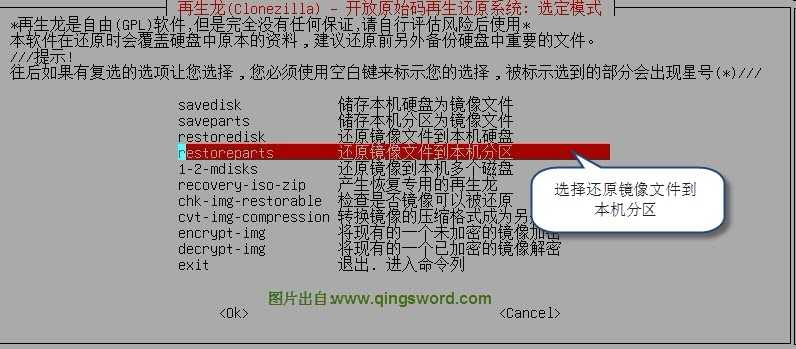 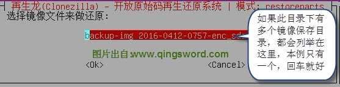 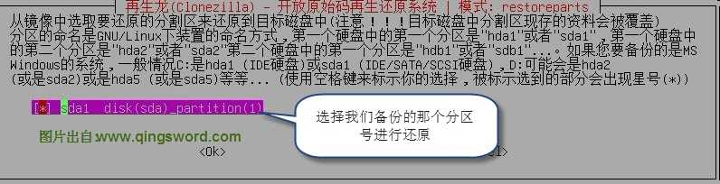 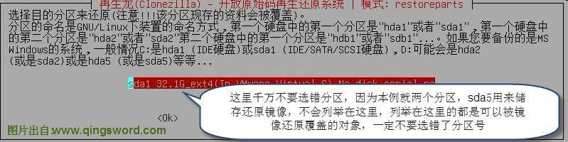接下来的参数全部默认回车，根据提示，如果制作镜像的时候加密了，会提示你输入密码用来解密镜像，到此备份和还原全部演示完成。
0×2.如何使用tar备份和还原Ubuntu
实验用到的命令：tar
需要排除的目录:备份文件本身,(一定不要忘记排除备份文件本身)。
备份前需要的准备工作：
一个安装了Ubuntu系统并且可以开机启动的U盘，安装方法详见：[图文]如何制作u盘系统启动盘
试验环境系统分区介绍：
硬盘/dev/sda,两个分区/dev/sda1,/dev/sda2,系统安装在/dev/sda1
（用U盘启动后请根据sudo fdisk -l确定自己需要备份或还原的分区号）
备份实例:
#使用U盘启动后，先将我们要备份的分区挂载到U盘系统/mnt下 u@QingSword.COM:~$ sudo mount /dev/sda1 /mnt u@QingSword.COM:~$ cd /mnt /* * --exclude后面可以接你要排除的目录，可以并列多个exclude来排除多个目录或文件 * /mnt/backup.tar.gz 将备份文件放在被备份的目录下，backup.tar.gz为备份文件名 * 如果备份文件放在被备份的目录，别忘记添加exclude备份文件本身 * 最后的*代表了当前目录/mnt下的所有文件，既被我们挂载的硬盘的系统分区文件 */ u@QingSword.COM:/mnt$ sudo tar -vczpf /mnt/backup.tar.gz --exclude=/mnt/backup.tar.gz *
备份完成后，我们可以将备份文件放到u盘里面，方便以后还原。
还原实例:
#使用U盘启动后，先将我们要还原的分区挂载到U盘系统/mnt下 u@QingSword.COM:~$ sudo mount /dev/sda1 /mnt #删除分区中原有文件 u@QingSword.COM:~$ sudo rm -rf /mnt/* #在文章的第一部分，我们将备份文件放在了备份用的u盘的根目录/backup.tar.gz，如果备份文件放在硬盘中，请替换/backup.tar.gz路径为你备份文件路径。 // -C 后面指定还原路径，本例就是挂载到u盘/mnt的硬盘系统分区。 u@QingSword.COM:~$sudo tar -vxzpf /backup.tar.gz -C /mnt
总结：以上两种方式都能对Ubuntu的指定分区进行备份和还原，读者可以根据个人喜好自选其一。